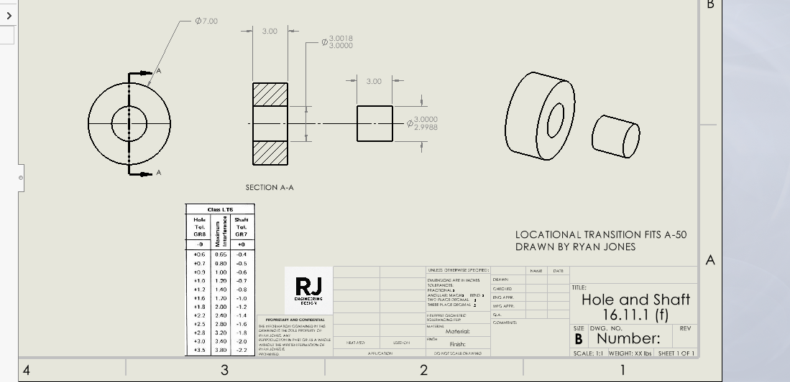
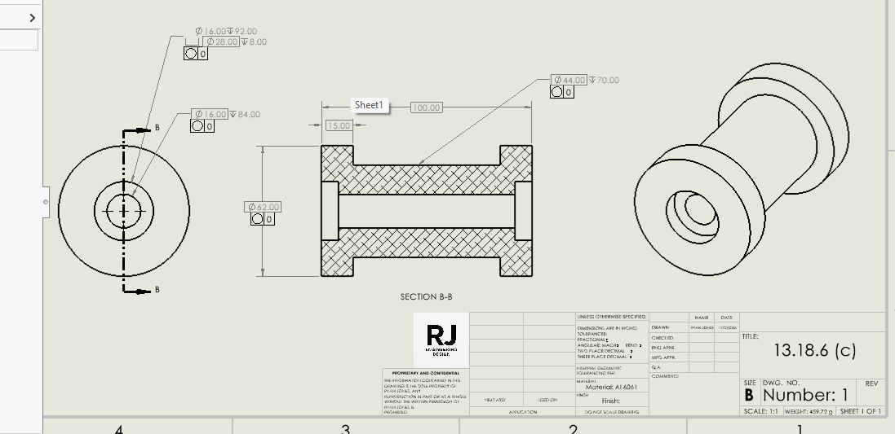
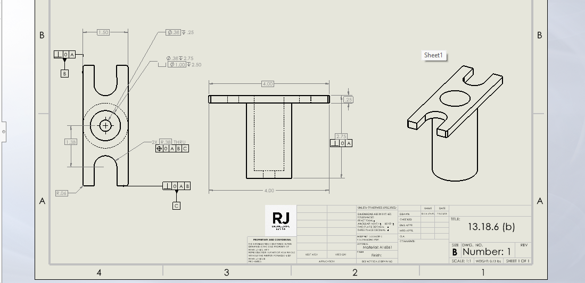
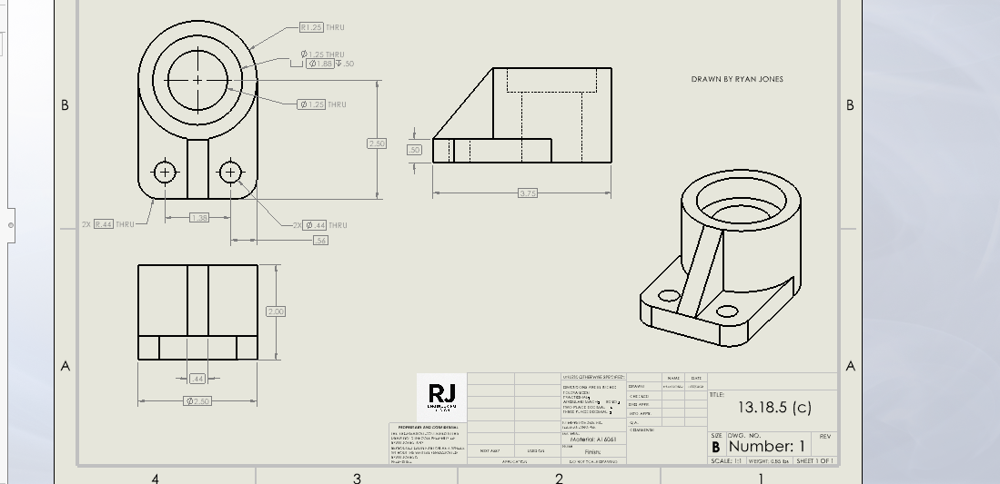
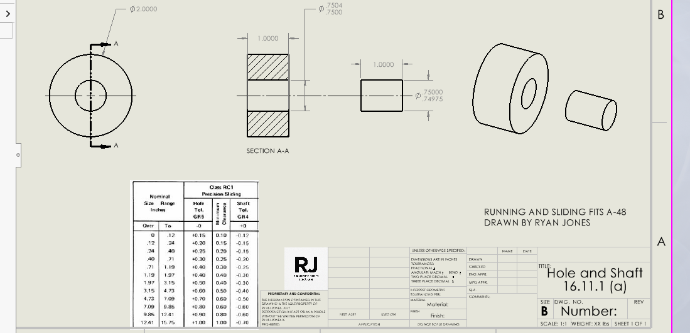
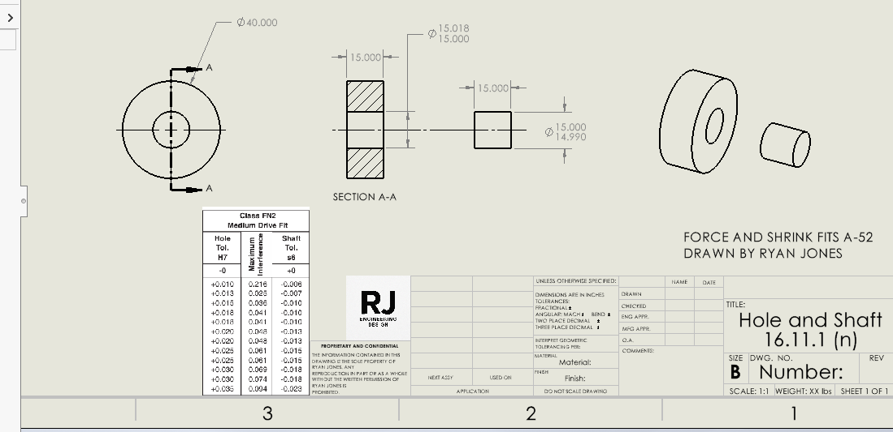

Engineering Drawings, GD&T & Fits
A set of engineering drawings showing various parts and assemblies with fully defined geometric dimensioning and tolerancing (GD&T). Each hole-and-shaft assembly drawing includes a table giving the hole tolerance, the shaft tolerance, and the maximum interference allowed for the fit required.
- Course
- MAE 1351 Intro to Engineering Design, UT Arlington
- Tools
- SolidWorks drawings
- Fits covered
- Running/sliding, locational transition, force/shrink

Part drawings with GD&T
Three multi-view part drawings with section views and fully defined GD&T.



Hole-and-shaft fits
Each assembly drawing shows a hole and shaft in section and in an exploded isometric view, with a table of hole tolerance, shaft tolerance, and maximum interference for the class of fit. In the transition-fit example above, the nominal Ø3.000 hole is toleranced 3.0000 to 3.0018 and the shaft 2.9988 to 3.0000. The three families are:
- Running and sliding fits
- Locational transition fits
- Force and shrink fits


Choosing a fit
- Clearance fit: the hole is larger than the shaft, so the parts move freely. For example, a piston in an engine cylinder must slide without interference.
- Interference fit: the hole is smaller than the shaft, giving an extremely tight fit with no room for movement.
- Transition fit: a very small clearance or interference. It suits parts that must fit tightly but may need to be separated later.